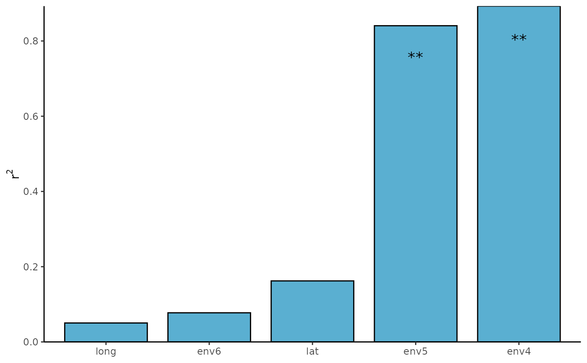

Envfit test for RDA result
envfitt(phy.rda, env, ...)g_test object
data(otutab, package = "pcutils")
env <- metadata[, 6:10]
# RDA
myRDA(otutab, env) -> phy.rda
#> ==================================Check models==================================
#> DCA analysis, select the sorting analysis model according to the first value of the Axis lengths row.
#> - If it is more than 4.0 - CCA (based on unimodal model, canonical correspondence analysis);
#> - If it is between 3.0-4.0 - both RDA/CCA;
#> - If it is less than 3.0 - RDA (based on linear model, redundancy analysis)
#>
#> Call:
#> vegan::decorana(veg = dat.h)
#>
#> Detrended correspondence analysis with 26 segments.
#> Rescaling of axes with 4 iterations.
#> Total inertia (scaled Chi-square): 0.3192
#>
#> DCA1 DCA2 DCA3 DCA4
#> Eigenvalues 0.03142 0.02276 0.01927 0.017818
#> Additive Eigenvalues 0.03142 0.02276 0.01927 0.017881
#> Decorana values 0.03169 0.02142 0.01511 0.009314
#> Axis lengths 0.73929 0.72605 0.52357 0.666913
#>
#> =================================Initial Model==================================
#> Initial cca, vif>20 indicates serious collinearity:
#> env4 env5 env6 lat long
#> 2.574997 2.674671 1.252002 1.381839 1.211392
#> Initial Model R-square: 0.04828743
#> ===================================Statistics===================================
#> 0.3282029 constrained indicates the degree to which environmental factors explain differences in community structure
#> 0.6717971 unconstrained means that the environmental factors cannot explain the part of the community structure
envfitt(phy.rda, env) -> envfit_res
plot(envfit_res)
